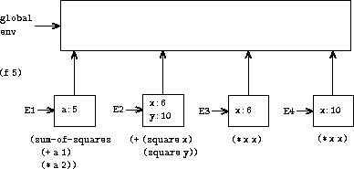

|
When we introduced compound procedures in chapter 1, we used thesubstitution model of evaluation(section 1.1.5) to define what is meant byapplying a procedure to arguments:
Once we admit assignment into our programming language, such adefinition is no longer adequate. In particular,section 3.1.3 argued that, in the presence ofassignment, a variable can no longer be considered to be merely a namefor a value. Rather, a variable must somehow designate a “place” inwhich values can be stored. In our new model of evaluation, theseplaces will be maintained in structures called environments.
An environment is a sequence of frames. Each frame is a table(possibly empty) of bindings, which associate variable names withtheir corresponding values. (A single frame may contain at most onebinding for any variable.) Each frame also has a pointer to its enclosing environment, unless, for the purposes of discussion, theframe is considered to be global. The value of a variablewith respect to an environment is the value given by the binding ofthe variable in the first frame in the environment that contains abinding for that variable. If no frame in the sequence specifies abinding for the variable, then the variable is said to be unbound in the environment.
Figure 3.1 shows a simple environmentstructure consisting of three frames, labeled I, II, and III. In thediagram, A, B, C, and D are pointers to environments. C and D pointto the same environment. The variables z and x are boundin frame II, while y and x are bound in frame I. Thevalue of x in environment D is 3. The value of x withrespect to environment B is also 3. This is determined as follows: Weexamine the first frame in the sequence (frame III) and do not find abinding for x, so we proceed to the enclosing environment D andfind the binding in frame I. On the other hand, the value of xin environment A is 7, because the first frame in the sequence (frameII) contains a binding of x to 7. With respect to environmentA, the binding of x to 7 in frame II is said to shadow thebinding of x to 3 in frame I.
The environment is crucial to the evaluation process,because it determines the context in which an expression should beevaluated. Indeed, one could say that expressions in a programminglanguage do not, in themselves, have any meaning. Rather, anexpression acquires a meaning only with respect to some environment inwhich it is evaluated. Even the interpretation of an expression asstraightforward as (+ 1 1) depends on an understanding that oneis operating in a context in which + is the symbol for addition.Thus, in our model of evaluation we will always speak of evaluating anexpression with respect to some environment. To describe interactionswith the interpreter, we will suppose that there is a globalenvironment, consisting of a single frame (with no enclosingenvironment) that includes values for the symbols associated with theprimitive procedures. For example, the idea that + is thesymbol for addition is captured by saying that the symbol + isbound in the global environment to the primitive addition procedure.
The overall specification of how the interpreter evaluates acombination remains the same as when we first introduced it insection 1.1.3:
1. Evaluate the subexpressions of thecombination.12
2. Apply the value of the operator subexpression to the values of theoperand subexpressions.
The environment model of evaluation replaces the substitution model inspecifying what it means to apply a compound procedure to arguments.
In the environment model of evaluation, a procedure is always a pairconsisting of some code and a pointer to an environment. Proceduresare created in one way only: by evaluating a lambda expression.This produces a procedure whose code is obtained from the text of thelambda expression and whose environment is the environment inwhich the lambda expression was evaluated to produce theprocedure. For example, consider the procedure definition
(define (square x) (* x x))
evaluated in the global environment. The procedure definition syntaxis just syntactic sugar for an underlying implicit lambdaexpression. It would have been equivalent to have used
(define square (lambda (x) (* x x)))
which evaluates (lambda (x) (* x x)) and binds square to the resulting value, all in the global environment.
Figure 3.2 shows the result of evaluating thisdefine expression. The procedure object is a pair whose codespecifies that the procedure has one formal parameter, namely x,and a procedure body (* x x). The environment part of theprocedure is a pointer to the global environment, since that is theenvironment in which the lambda expression was evaluated toproduce the procedure. A new binding, which associates the procedureobject with the symbol square, has been added to the globalframe. In general, define creates definitions by addingbindings to frames.
 |
Now that we have seen how procedures are created, we can describe howprocedures are applied. The environment model specifies: To apply aprocedure to arguments, create a new environment containing a framethat binds the parameters to the values of the arguments. Theenclosing environment of this frame is the environment specified bythe procedure. Now, within this new environment, evaluate theprocedure body.
To show how this rule is followed, figure 3.3illustrates the environment structure created by evaluating theexpression (square 5) in the global environment, where square is the procedure generated infigure 3.2. Applying the procedure results inthe creation of a new environment, labeled E1 in the figure, thatbegins with a frame in which x, the formal parameter for theprocedure, is bound to the argument 5. The pointer leading upwardfrom this frame shows that the frame's enclosing environment is theglobal environment. The global environment is chosen here, becausethis is the environment that is indicated as part of the squareprocedure object. Within E1, we evaluate the body of the procedure,(* x x). Since the value of x in E1 is 5, the result is(* 5 5), or 25.
The environment model of procedure application can be summarized bytwo rules:
lambdaexpression relative to a given environment. The resulting procedureobject is a pair consisting of the text of the lambda expressionand a pointer to the environment in which the procedure was created.We also specify that defining a symbol using define creates abinding in the current environment frame and assigns to the symbol theindicated value.13 Finally, we specify the behavior ofset!, the operation that forced us to introduce the environmentmodel in the first place. Evaluating the expression (set!<variable> <value>) in some environment locates the binding ofthe variable in the environment and changes that binding to indicatethe new value. That is, one finds the first frame in the environmentthat contains a binding for the variable and modifies that frame. Ifthe variable is unbound in the environment, then set! signalsan error.
These evaluation rules, though considerably more complex than thesubstitution model, are still reasonably straightforward. Moreover,the evaluation model, though abstract, provides a correct descriptionof how the interpreter evaluates expressions. In chapter 4 we shallsee how this model can serve as a blueprint for implementing a workinginterpreter. The following sections elaborate the details of themodel by analyzing some illustrative programs.
When we introduced the substitution model insection 1.1.5 we showed how the combination(f 5) evaluates to 136, given the following proceduredefinitions:
(define (square x) (* x x)) (define (sum-of-squares x y) (+ (square x) (square y))) (define (f a) (sum-of-squares (+ a 1) (* a 2)))
We can analyze the same example using the environment model.Figure 3.4 shows the three procedure objectscreated by evaluating the definitions of f, square, andsum-of-squares in the global environment. Each procedure objectconsists of some code, together with a pointer to the globalenvironment.
 |
In figure 3.5 we see the environment structure createdby evaluating the expression (f 5). The call to f createsa new environment E1 beginning with a frame in which a, theformal parameter of f, is bound to the argument 5. In E1, weevaluate the body of f:
(sum-of-squares (+ a 1) (* a 2))
|  |
To evaluate this combination, we first evaluate the subexpressions.The first subexpression, sum-of-squares, has a value that is aprocedure object. (Notice how this value is found: We first look inthe first frame of E1, which contains no binding for sum-of-squares. Then we proceed to the enclosing environment,i.e. the global environment, and find the binding shown infigure 3.4.) The other two subexpressions areevaluated by applying the primitive operations + and * toevaluate the two combinations (+ a 1) and (* a 2) toobtain 6 and 10, respectively.
Now we apply the procedure object sum-of-squares to thearguments 6 and 10. This results in a new environment E2 in which theformal parameters x and y are bound to the arguments.Within E2 we evaluate the combination (+ (square x) (square y)).This leads us to evaluate (square x), where square isfound in the global frame and x is 6. Once again, we set up anew environment, E3, in which x is bound to 6, and within thiswe evaluate the body of square, which is (* x x). Also aspart of applying sum-of-squares, we must evaluate thesubexpression (square y), where y is 10. This second callto square creates another environment, E4, in which x, theformal parameter of square, is bound to 10. And within E4 wemust evaluate (* x x).
The important point to observe is that each call to squarecreates a new environment containing a binding for x. We cansee here how the different frames serve to keep separate the differentlocal variables all named x. Notice that each frame created bysquare points to the global environment, since this is theenvironment indicated by the square procedure object.
After the subexpressions are evaluated, the results arereturned. The values generated by the two calls to square areadded by sum-of-squares, and this result is returned by f.Since our focus here is on the environment structures, we will notdwell on how these returned values are passed from call to call;however, this is also an important aspect of the evaluation process,and we will return to it in detail in chapter 5.
Exercise 3.9. In section 1.2.1we used the substitution model to analyze twoprocedures for computing factorials, a recursive version
(define (factorial n) (if (= n 1) 1 (* n (factorial (- n 1)))))
and an iterative version
(define (factorial n) (fact-iter 1 1 n)) (define (fact-iter product counter max-count) (if (> counter max-count) product (fact-iter (* counter product) (+ counter 1) max-count)))
Show the environment structures created by evaluating (factorial 6)using each version of the factorial procedure.14
We can turn to the environment model to see how procedures andassignment can be used to represent objects with local state. As anexample, consider the “withdrawal processor” fromsection 3.1.1 created by calling theprocedure
(define (make-withdraw balance) (lambda (amount) (if (>= balance amount) (begin (set! balance (- balance amount)) balance) "Insufficient funds")))
Let us describe the evaluation of
(define W1 (make-withdraw 100))
followed by
(W1 50) 50
Figure 3.6 shows the result of defining the make-withdraw procedure in the global environment. This produces aprocedure object that contains a pointer to the global environment.So far, this is no different from the examples we have already seen,except that the body of the procedure is itself a lambdaexpression.
 |
The interesting part of the computation happens when we apply theprocedure make-withdraw to an argument:
(define W1 (make-withdraw 100))
We begin, as usual, by setting up an environment E1 in which theformal parameter balance is bound to the argument 100. Withinthis environment, we evaluate the body of make-withdraw, namelythe lambda expression. This constructs a new procedure object,whose code is as specified by the lambda and whose environmentis E1, the environment in which the lambda was evaluated toproduce the procedure. The resulting procedure object is the valuereturned by the call to make-withdraw. This is bound to W1 in the global environment, since the define itself is beingevaluated in the global environment. Figure 3.7 shows theresulting environment structure.
 |
Now we can analyze what happens when W1 is applied to anargument:
(W1 50) 50
We begin by constructing a frame in which amount, the formalparameter of W1, is bound to the argument 50. The crucial pointto observe is that this frame has as its enclosing environment not theglobal environment, but rather the environment E1, because this is theenvironment that is specified by the W1 procedure object.Within this new environment, we evaluate the body of the procedure:
(if (>= balance amount) (begin (set! balance (- balance amount)) balance) "Insufficient funds")
The resulting environment structure is shown infigure 3.8. The expression being evaluated referencesboth amount and balance. Amount will be found inthe first frame in the environment, while balance will be foundby following the enclosing-environment pointer to E1.
When the set! is executed, the binding of balance in E1 is changed. At the completion of the call to W1,balance is 50, and the frame that contains balanceis still pointed to by the procedure object W1. The framethat binds amount(in which we executed the code that changed balance) is no longerrelevant, since the procedure call that constructed it has terminated,and there are no pointers to that frame from other parts of theenvironment. The next time W1 is called, this will build a newframe that binds amount and whose enclosing environment is E1.We see that E1 serves as the “place” that holds the local statevariable for the procedure object W1. Figure 3.9shows the situation after the call to W1.
 |
Observe what happens when we create a second “withdraw” object bymaking another call to make-withdraw:
(define W2 (make-withdraw 100))
This produces the environment structure of figure 3.10, which showsthat W2 is a procedure object, that is, a pair with some codeand an environment. The environment E2 for W2 was created bythe call to make-withdraw. It contains a frame with its ownlocal binding for balance. On the other hand, W1 and W2 have the same code: the code specified by the lambdaexpression in the body of make-withdraw.15 We see here why W1 and W2behave as independent objects. Calls to W1 reference the statevariable balance stored in E1, whereas calls to W2reference the balance stored in E2. Thus, changes to the localstate of one object do not affect the other object.
 |
Exercise 3.10. In the make-withdraw procedure, the local variable balanceis created as a parameter of make-withdraw. We could alsocreate the local state variable explicitly, using let, asfollows:
(define (make-withdraw initial-amount) (let ((balance initial-amount)) (lambda (amount) (if (>= balance amount) (begin (set! balance (- balance amount)) balance) "Insufficient funds"))))
Recall from section 1.3.2 that let is simplysyntactic sugar for a procedure call:
(let ((<var> <exp>)) <body>)
is interpreted as an alternate syntax for
((lambda (<var>) <body>) <exp>)
Use the environment model to analyze this alternateversion of make-withdraw, drawing figures like the ones above toillustrate the interactions
(define W1 (make-withdraw 100)) (W1 50) (define W2 (make-withdraw 100))
Show that the two versions of make-withdraw create objects withthe same behavior. How do the environment structures differ for the twoversions?
Section 1.1.8 introduced the idea that procedures can have internaldefinitions, thus leading to a block structure as in thefollowing procedure to compute square roots:
(define (sqrt x) (define (good-enough? guess) (< (abs (- (square guess) x)) 0.001)) (define (improve guess) (average guess (/ x guess))) (define (sqrt-iter guess) (if (good-enough? guess) guess (sqrt-iter (improve guess)))) (sqrt-iter 1.0))
Now we can use the environment model to see why these internaldefinitions behave as desired. Figure 3.11 shows the point in theevaluation of the expression (sqrt 2) where the internalprocedure good-enough? has been called for the first time withguess equal to 1.
 |
Observe the structure of the environment. Sqrt is a symbol inthe global environment that is bound to a procedure object whoseassociated environment is the global environment. When sqrt wascalled, a new environment E1 was formed, subordinate to the globalenvironment, in which the parameter x is bound to 2. The bodyof sqrt was then evaluated in E1. Since the first expression inthe body of sqrt is
(define (good-enough? guess) (< (abs (- (square guess) x)) 0.001))
evaluating this expression defined the procedure good-enough?in the environment E1. To be more precise, the symbol good-enough? was added to the first frame of E1, bound to aprocedure object whose associated environment is E1. Similarly, improve and sqrt-iter were defined as procedures in E1. Forconciseness, figure 3.11 shows only the procedureobject for good-enough?.
After the local procedures were defined, theexpression (sqrt-iter 1.0) was evaluated,still in environment E1. So theprocedure object bound to sqrt-iter in E1 was called with 1 asan argument. This created an environment E2 in which guess,the parameter of sqrt-iter, is bound to 1. Sqrt-iter inturn called good-enough? with the value of guess (fromE2) as the argument for good-enough?. This set up anotherenvironment, E3, in which guess (the parameter of good-enough?) is bound to 1. Although sqrt-iter and good-enough? both have a parameter named guess, these are twodistinct local variables located in different frames. Also, E2 and E3both have E1 as their enclosing environment, because the sqrt-iter and good-enough? procedures both have E1 as theirenvironment part. One consequence of this is that the symbol xthat appears in the body of good-enough? will reference thebinding of x that appears in E1, namely the value of xwith which the original sqrt procedure was called.The environment model thus explains the two key properties that makelocal procedure definitions a useful technique for modularizingprograms:
Exercise 3.11. In section 3.2.3we saw how the environment model described thebehavior of procedures with local state. Now we have seen howinternal definitions work. A typical message-passing procedurecontains both of these aspects. Consider the bank account procedureof section 3.1.1:
(define (make-account balance) (define (withdraw amount) (if (>= balance amount) (begin (set! balance (- balance amount)) balance) "Insufficient funds")) (define (deposit amount) (set! balance (+ balance amount)) balance) (define (dispatch m) (cond ((eq? m 'withdraw) withdraw) ((eq? m 'deposit) deposit) (else (error "Unknown request -- MAKE-ACCOUNT" m)))) dispatch)
Show the environment structure generated by the sequence ofinteractions
(define acc (make-account 50)) ((acc 'deposit) 40) 90 ((acc 'withdraw) 60) 30
Where is the local state for acc kept? Suppose we defineanother account
(define acc2 (make-account 100))
How are the local states for the two accounts kept distinct? Whichparts of the environment structure are shared between acc andacc2?
12 Assignment introduces a subtlety into step 1 ofthe evaluation rule. As shown inexercise 3.8, the presence of assignmentallows us to write expressions that will produce different valuesdepending on the order in which the subexpressions in a combinationare evaluated. Thus, to be precise, we should specify an evaluationorder in step 1 (e.g., left to right or right to left). However, thisorder should always be considered to be an implementation detail, andone should never write programs that depend on some particular order.For instance, a sophisticated compiler might optimize a program byvarying the order in which subexpressions are evaluated.
13 If there is already a binding for thevariable in the current frame, then the binding is changed. This isconvenient because it allows redefinition of symbols; however, it alsomeans that define can be used to change values, and this bringsup the issues of assignment without explicitly using set!.Because of this, some people prefer redefinitions of existing symbolsto signal errors or warnings.
14 Theenvironment model will not clarify our claim insection 1.2.1 that the interpreter canexecute a procedure such as fact-iter in a constant amount ofspace using tail recursion. We will discuss tail recursion when wedeal with the control structure of the interpreter insection 5.4.
15 WhetherW1 and W2 share the same physical code stored in thecomputer, or whether they each keep a copy of the code, is a detail ofthe implementation. For the interpreter we implement in chapter 4,the code is in fact shared.